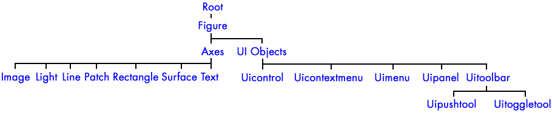
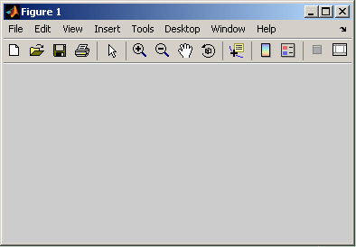
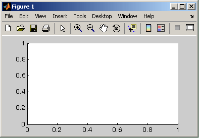
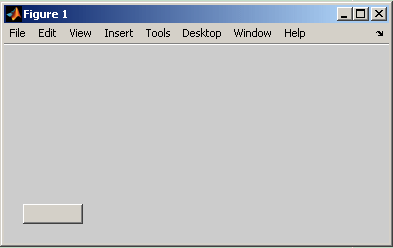
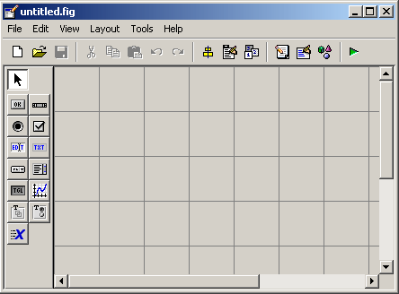
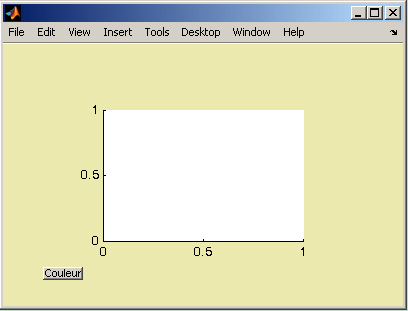

Introduction à la programmation des interfaces graphiques
Améliorer sa programmation sous MATLAB
Date de publication : 01/06/2007 , Date de mise à jour : 17/03/2009
Par
Jérôme Briot (Dut sur developpez.com)
Cet article est une introduction au développement des interfaces graphiques
sous MATLAB.
Contenu : l'article comporte :
Contenu : l'article comporte :
- une description succincte des objets graphiques (hiérarchie, identifiant, propriétés)
- une présentation de l'outil GUIDE pour le développement des interfaces graphiques
- une évaluation du GUIDE par rapport au codage classique "à la main"
Public visé : cet article est destiné aux débutants ayant déjà
quelques notions de MATLAB et surtout aux utilisateurs avancés qui seront
incités à ne pas utiliser l'outil GUIDE pour développez les interfaces
graphiques.
| Votre avis et vos suggestions sur cet article m'intéressent ! Alors après votre lecture, n'hésitez pas : commentez · |
Avant-propos
1. Les objets graphiques et leur fonctionnement
Les objets graphiques
Les identifiants des objets graphiques
Les propriétés des objets graphiques
2. Avec GUIDE ou bien en solo ?
Présentation
Exemple à partir d'un GUI simple
Conclusion
Pour résumer
Remarque
Remerciements
Avant-propos
Les IHM (Interfaces Homme Machine), sont appelées
GUI (Graphical User Interfaces) dans MATLAB. Elles permettent à l'utilisateur, grâce à des objets graphiques
(boutons, menus, cases à cocher, ...) d'interagir avec un programme informatique.
Du fait du nombre important d'objets et surtout du nombre encore plus élevé des paramètres associés, leur programmation "à la main" déroute généralement le débutant. Depuis la version 5.0 (1997), MATLAB possède un outil IDE dédié à la création des interfaces graphiques. Cet outil, appelé GUIDE (Graphical User Interface Development Environment), permet de concevoir intuitivement ces interfaces graphiques.
Du fait du nombre important d'objets et surtout du nombre encore plus élevé des paramètres associés, leur programmation "à la main" déroute généralement le débutant. Depuis la version 5.0 (1997), MATLAB possède un outil IDE dédié à la création des interfaces graphiques. Cet outil, appelé GUIDE (Graphical User Interface Development Environment), permet de concevoir intuitivement ces interfaces graphiques.
1. Les objets graphiques et leur fonctionnement
Les objets graphiques
Sous Matlab, les objets graphiques sont disposés selon une hiérarchie pyramidale parent-enfant :

Au sommet de la hiérarchie se trouve l'objet Root.
Cet objet est invisible (on peut se le représenter comme étant l'écran
de l'ordinateur). L'utilisateur n'interagit que très rarement avec cet
objet.
Ensuite, on trouve les objets de type Figure. Ce sont les conteneurs visibles où sont disposés tous les autres objets enfants. Plusieurs objets Figure peuvent être ouverts simultanément et peuvent éventuellement communiquer entre eux.
Ensuite, on trouve les objets de type Figure. Ce sont les conteneurs visibles où sont disposés tous les autres objets enfants. Plusieurs objets Figure peuvent être ouverts simultanément et peuvent éventuellement communiquer entre eux.

Viennent ensuite les objets de type Axes
qui sont les zones de traçage des graphiques (2D ou 3D). Ces objets ont
pour enfants, tous les objets représentants des résultats mathématiques
(courbes, surfaces, images, maillages, etc.). Un objet Figure peut
contenir plusieurs objets Axes simultanément.

On trouve également au même niveau, les objets UI (User Interface) tels que des boutons, des menus, des cases à cocher, ... Ces objets permettent à l'utilisateur d'interagir dynamiquement à la souris avec le GUI.

Les identifiants des objets graphiques
A la création d'un objet, MATLAB lui attribue automatiquement un
identifiant (handle), sous la forme d'un nombre réel unique qui peut
être stocké dans une variable. Ceci permet de retrouver à tout moment
un objet graphique au cours du fonctionnement d'une interface. Cet
identifiant existe tant que l'objet existe. Dès que l'objet est
détruit, cet identifiant disparaît.
Par exemple, à la création d'un objet Figure :
Par exemple, à la création d'un objet Figure :
| Création d'un objet et récupération de son identifiant |
|
L'identifiant est ici un nombre entier (et non pas un réel). C'est un
cas particulier, les objets Figure étant par défaut identifiés par des
entiers.
Le programmeur gère les identifiants, soit avec la fonction GUIHANDLES, soit avec les fonctions FINDOBJ/FINDALL.
Quelques identifiants particuliers peuvent être gérés avec les fonctions suivantes :
Le programmeur gère les identifiants, soit avec la fonction GUIHANDLES, soit avec les fonctions FINDOBJ/FINDALL.
Quelques identifiants particuliers peuvent être gérés avec les fonctions suivantes :
- GCA qui récupère l'identifiant de l'objet Axes courant
- GCBF qui récupère l'identifiant de l'objet Figure où se trouve l'objet graphique dont l'action est en cours
- GCBO qui récupère l'identifiant de l'objet graphique dont l'action est en cours
- GCF qui récupère l'identifiant de l'objet Figure courant
- GCO qui récupère l'identifiant de l'objet graphique courant
Les propriétés des objets graphiques
Chaque objet graphique possède des propriétés (position, couleur,
action, etc.) qui sont définies à sa création et qui peuvent être
modifiées dynamiquement au cours du fonctionnement du GUI. Ces
propriétés peuvent être récupérées et modifiées en utilisant
l'identifiant de l'objet et les fonctions GET et SET.
La difficulté consiste, bien entendu, à apprendre et à maîtriser ces nombreuses propriétés :
- les propriétés de l'objet Root
- les propriétés de l'objet Figure
- les propriétés de l'objet Axes
- les propriétés des objets Uicontrol
2. Avec GUIDE ou bien en solo ?
Présentation
Le GUIDE est un outil graphique qui regroupe tout ce dont le
programmeur à besoin pour créer une interface graphique de façon
intuitive.

Le placement des objets est réalisé par sélection dans la boite à
outils, mise en place et mise à dimension à la souris. Un double-clique
sur chaque objet permet de faire apparaître un menu avec les propriétés
de cet objet. Leur modification et l'aperçu de ces modifications sont
immédiats. Au final, le code est généré automatiquement et l'interface
est enregistrée sous deux fichiers portant le même nom mais dont les
deux extensions sont .fig et .m. Le
premier contient la définition des objets graphiques. Le second
contient les lignes de code qui assurent le fonctionnement de
l'interface graphique.
L'utilisation du GUIDE semble donc être LA méthode de programmation des GUI sous MATLAB. Mais, comparons cette méthode à la programmation des GUI "à la main" à l'aide d'un exemple simple.
L'utilisation du GUIDE semble donc être LA méthode de programmation des GUI sous MATLAB. Mais, comparons cette méthode à la programmation des GUI "à la main" à l'aide d'un exemple simple.
Exemple à partir d'un GUI simple
- But : comparer la programmation des GUI, à l'aide du GUIDE et "à la main".
On se propose de créer une interface graphique simple, composée d'une
figure contenant un objet Axes et un objet Uicontrol de type
Pushbutton. Lorsque l'on clique sur l'objet Pushbutton, l'objet Axes
change de couleur de façon aléatoire.

- Avec le GUIDE :
Après avoir mis en place tous les objets et ajusté toutes les propriétés, le GUIDE génère deux fichiers. Un fichier .fig (non éditable) contenant les
objets graphiques (Figure, Axes et Pushbutton) et un fichier .m contenant les lignes de code suivantes :
| Code généré automatiquement par le GUIDE |
|
De toute évidence, ce code est très difficile à lire et à exploiter
même pour un programmeur avertit. Son évolution et sa maintenance sont
donc également très difficiles (qui plus est sans l'utilisation du
GUIDE). Mais la principale limitation vient du fait que la
programmation des objets graphiques n'apparaît nulle part (fichier .fig
crypté).
- Sans le GUIDE :
La même interface graphique programmée "à la main" peut être écrite dans un seul fichier .m:
| Code écrit à la main |
|
Ce code est relativement simple et, mis à part les propriétés spécifiques à chaque objet, il est relativement lisible.
Un programmeur pourra aisément faire évoluer ce code quelque soit la version de MATLAB utilisée.
- Au final :
Bien que la génération automatique du code permette d'éviter les
erreurs de syntaxe (généralement périlleuses à corriger pour le
débutant), celle-ci peut vite devenir une limitation pour les
utilisateurs plus avertis. Elle pénalise grandement l'évolutivité
ultérieure des GUIs en masquant une grande partie du code. Au final,
cela peut même entraîner des problèmes de compatibilité entre des codes
générés sous différentes versions de MATLAB.
Le GUIDE est donc un outil efficace pour le programmeur débutant car la gestion des objets y est très intuitive. Il peut également être utile dans la conception des interfaces graphiques complexes pour gérer la mise en position des objets. Ces deux cas mis à part, le programmeur veillera le plus tôt possible à programmer ses interfaces graphiques à la main.
Le GUIDE est donc un outil efficace pour le programmeur débutant car la gestion des objets y est très intuitive. Il peut également être utile dans la conception des interfaces graphiques complexes pour gérer la mise en position des objets. Ces deux cas mis à part, le programmeur veillera le plus tôt possible à programmer ses interfaces graphiques à la main.
Conclusion
Pour résumer
- Les interfaces graphiques se nomment GUI sous MATLAB
- Les objets graphiques sont hiérarchisés (parent-enfant) : Root => Figure => Axes et Uicontrol
- Chacun des objets graphiques possèdent de nombreuses propriétés que le programmeur doit apprendre
- Il existe deux techniques de programmation : à l'aide de l'outil GUIDE ou "à la main"
- Le GUIDE convient bien à l'apprentissage mais devient vite inefficace (génération automatique du code)
- La programmation "à la main" reste la technique la plus efficace à long terme pour programmer les GUI
Remarque
L'auteur de ce tutoriel invite à créer les interfaces graphiques (GUI)
sous MATLAB "à la main". Sa conviction repose sur sa propre expérience
et surtout sur les discussions qu'il a eu avec d'autres programmeurs
MATLAB. On notera que cette opinion est généralement admise dans la
communauté internationale MATLAB (1).
Remerciements
L'auteur tient à remercier Fleur-Anne.Blain pour la correction orthographique de cet article et Caro-Line pour son aide pendant la rédaction de ce même article.
| (1) | GUIs: GUIDE vs Code Only |


Copyright © 2007-2009 Jérôme Briot. Aucune reproduction, même partielle, ne peut être faite de ce site et de l'ensemble de son contenu : textes, documents, images, etc sans l'autorisation expresse de l'auteur. Sinon vous encourez selon la loi jusqu'à 3 ans de prison et jusqu'à 300 000 E de dommages et intérêts. Cette page est déposée à la SACD.
Vos questions techniques : forum d'entraide MATLAB - Publiez vos articles, tutoriels et cours
et rejoignez-nous dans l'équipe de rédaction du club d'entraide des développeurs francophones
Nous contacter - Hébergement - Participez - Copyright © 2000-2009 www.developpez.com - Legal informations.
et rejoignez-nous dans l'équipe de rédaction du club d'entraide des développeurs francophones
Nous contacter - Hébergement - Participez - Copyright © 2000-2009 www.developpez.com - Legal informations.